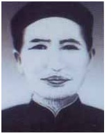

Về cuối Thế Kỷ 19, cả thế giới đã trải qua một cuộc biến thiên to tát.
Ở Âu Châu sau mấy cuộc cách mệnh làm rung động những nền tảng rất là kiên cố, các chính thể các chế độ liên tiếp đổi thay: Nước Pháp, một lần thứ ba nữa lại trở nên một nước Cộng Hòa, nước Đức, nước Y thực hiện được sự toàn quốc thống nhất; nước Anh sốt sắng cải cách việc nội trị để cho dân được thêm quyền.
Ở Mỹ Châu, nước Hoa Kỳ, sau cuộc Nam Bắc Chiến Tranh, thủ tiêu được cái tục mãi nô, rồi dần dần bước đế địa vị phú cường. Còn những nước ở Nam Mỹ thì vừa thoát khỏi vòng áp chế của người Tây Ban Nha, đã tìm cách tự cường với một tinh thần dân chủ mạnh mẽ.
Các nước Âu-Mỹ sau khi tạm yên việc nhà, liền dòm sang Châu Á, Châu Phi.
Miền Đông Á đang mơ màng trong giấc mộng nghìn xưa, sực nghe tiếng súng ngoài cửa ngõ, mới bàng hoàng tỉnh dậy: Nước Nhật vội vàng mở cổng ra đón lấy cái văn minh mới, rồi từ thời kỳ Minh Trị đã nghiễn nhiên theo gót kịp người; nước Tàu sau mấy trận thua liểng xiểng mới biết rằng không thể khư khư giữ mãi cái thuyết ‘’Bế quan tỏa cảng’’, cũng bó buộc phải giao thông với người và nghĩ đến những việc cải tạo trong nước; cả đến nước Xiêm cũng nhìn rõ con đường phải theo, và ngay từ đời Vua Chulalongkorn đã biết học theo những phương pháp mới.
Chỉ có nước Việt Nam ta hồi ấy là nhất định bưng tai bịt mắt, không thèm để ý đến cuộc doanh hoàn. Tự nhận là một nước cổ hiến, ta bo bo ôm chặt những hủ tục mà ta cho là quốc túy, quốc hồn, chẳng chịu nhìn đến những sự thay đổi trong thế giới.
Trong lịch sử Việt Nam, thực không có lúc nào rối ren bằng lúc này:
Phía ngoài, giặc giã nổi lên như ong vỡ tổ, nào giặc Tam Đường quấy nhiễu miền Thái Nguyên, nào giặc Châu Chấu dấy lên ở Sơn Tây, lại còn giặc Phụng ở Quảng Yên, Cai Tổng Vàng ở Bắc Ninh; ngoài ra còn giặc Nùng ở Cao Bằng, giặc Tàu với những đảng Cờ Đen, Cờ Vàng, Cờ Trắng hoành hành ở mạn Thượng Du.
Triều đình cũng có sai quân đi chống giữ, nhưng hồi ấy việc binh chế của ta còn thô lậu lắm: ‘’quân lính của mình mỗi đội có năm mươi người thì chỉ có năm người cầm súng điểu thương cũ phải châm ngòi mới bắn được, mà lại không luyện tập, cả năm chỉ có một lần tập bắn, mỗi người lính chỉ được bắn có sáu phát đạn mà thôi, hễ ai bắn quá số ấy thì phải bồi thường’’. (Trần Trọng Kim, Việt Nam Sử Lược, quyển hạ trang 220).
Ngay tại Kinh Đô, triều đình cũng không được yên dạ, vì việc phản nghịch của Hường Bảo và bọn ‘’Sơn Đông thi tửu hội’’.
Tình thế trong nước bề bộn như thế, nguy nan như thế mà dân gian vẫn như chưa tỉnh giấc mê.
Giữa lúc ấy, có một người sáng suốt nhất, học thức nhất, can đảm nhất, tài hoa nhất, nhìn rõ cái tương lai mờ ám của nước mình, muốn đứng lên kéo buồn theo gió để con thuyền Việt Nam có thể lướt trên làn sống văn minh.
Người ấy là: Nguyễn Trường Tộ tiên sinh.

Ông Nguyễn Trường Tộ là người làng Bùi Chu, Tổng Hải Đô, Phủ Hưng Nguyên, Tỉnh Nghệ An bây giờ. (Ở bên bờ phía Tây Kênh Gai, nối sông Vinh với sông Cửa Lò đối diện với làng Xã Đoài. Ngày trước làng Bùi Chu cùng xã với Xã Đoài và hai làng Bùi Ngõa, Bùi Thôn bên cạnh. Nay Xã Đoài thuộc Huyện Nghi Lộc) Ông sinh năm Minh Mệnh thứ chín (1828), là con một ông lang tên là Nguyễn Quốc Thư.
Từ lúc bé ông đã thông minh hơn người. Năm 18 tuổi theo ông Ngũ Khoa Tú Tài Giai ở Bùi Ngõa, rồi học ông Cống Sinh Hựu ở Kim Khê; sau đến tập văn trường quan Huyện Địa Linh hưu trí. Học với ai ông cũng tỏ là một người sáng láng và cần mẫn vô cùng. Ngay từ hồi ấy, ông đã trọng cái học thực dụng, nhưng cũng rất tinh thông về lối học khoa cử; lúc bấy giờ đã có tiếng là Trạng Tộ. Vì triều đình cấm những người theo Đạo Thiên Chúa không cho ứng thí, mà ông lại là con nhà đạo gốc, nên ông không đỗ đạt gì.
Năm Tự Đức thứ 11 (1858), nhà Giáo Đường Tân Ấp có nhờ ông đến dạy chữ Hán cho học trò. Vì thấy ông là một người thông minh hiếm có, nên ông Giám Mục người Pháp tên là Gautbier (lấy tên ta là Ngô Gia Hậu) dạy cho ông biết tiếng Pháp và giảng cho ông ít nhiều môn học Thái Tây. Sẵn tính hiếu học, ông hết sức chăm chỉ để thâu thái lấy cái học vấn của người, không thiết gì đến công danh lợi lộc, không vướng gì đến những sự thúc phọc của thế nhân. Trong một bài trần tình (Ngày 20 tháng 3 năm Tự Đức thứ 16-1863) ông có viết câu: ‘’Từ lúc nhỏ, tôi rất trọng sự giao du và quý sự điềm tĩnh, vẫn coi công danh như nước chảy mây bay, cả đời không chăm về sản nghiệp, không thiết chi vợ con, và đoạn tuyệt cả tài sắc’’.
Năm Tự Đức thứ 13 (1860), ông Giám Mục Gauthier về Tây, có cho ông đi theo. Ông được qua Thành La Mã, vào yết kiến Đức Giáo Hoàng Pie IX (Hiện nay người cháu nội ông là Nguyễn Trường Vũ còn giữ được đồng tiền của Giáo Hoàng Pie IX ban cho ông), rồi dang Thành Paris học tập trong mấy năm.
Cuộc du lịch ấy đã khiến ông mở to mắt để nhận thấy sức cường mạnh của người và cái kém cõi của mình.
Lúc đầu đứng trước cái văn minh sáng lạn của người ta, ông còn bị choáng váng; sau ông nhất quyết nghiên cứu kỹ lưỡng để hiểu thấu cội rễ cái sức mạnh của người Âu, những mong sau này đem sở học mình về giúp ích cho đồng bào. Trong vài năm ở Thành Paris, ông khảo cứu tường tận, những môn học chính trị, văn học và kỹ nghệ của nước Pháp. Chính ông đã tự nói: ‘’Về học vấn thì môn gì tôi cũng để ý đến, trên là thiên văn cao xa, dưới là địa lý sâu sắc, giữa là nhân sự phiền phức, cho đến luật lịch binh thư, bách nghệ, cách trí, thuật số, đều là nghiên cứu đến nơi cả’’.
Ông không những chỉ học trong sách hay trên ghế nhà trường như phần đông anh em du học ngày nay, mà ông còn mầy mò vào các xưởng thợ, các nhà máy, để xem từng ly từng tý, cho hiểu rõ cái cơ xảo của người ta. Trong một tờ điều trần ông viết: ‘’Tôi có đi với Cố Điều đến một lò nấu sắt lớn. Từ Thành Paris đến chỗ đó cũng xa bằng từ Huế đến Nghệ An. Chúng tôi ở đó luôn một tuần lễ, được xem hết các phép đúc sắt của người ta mới hiểu rõ cái chỗ phú cường ở nước họ khác xa với nước mình’’. Thế rồi ông kể tỉ mỉ từ cách tổ chức trong xưởng đến các khích thước, hình giáng và giá cả của các vật hạng.
Một lần khác, ông đi xem một xưởng chế đồ hỏa mai, về sau kể lại ‘’Họ dẫn chúng tôi đi xem máy móc làm hột nổ. Công trình của họ thực lớn lao; mỗi ngày làm được đến một vạn hột; số người làm trong xưởng ước ngoài ba trăm’’ (Ngày 20 tháng 10 năm Tự Đức thứ 20-1867).
Nhờ có chí học chuyên về thực dụng như thế, nên kiến văn ông rất quảng bác. Không những ông hiểu rỏ chính trị, kinh tế, địa dư, lịch sử của toàn cầu (từ những cuộc thành bại của Trung Quốc đến những nguyên do thịnh suy của La Mã); ông lại còn giỏi về binh pháp, ngoại giao, thạo về kỹ nghệ, thương mại, thông về khoa học, văn chương.
Không một việc gì quan trọng xẩy ra trong thế giới ở thời đại ông mà ông không để ý đến: Nói đến nước Pháp, ông kể tường tận về việc nội trị và việc ngoại giao, từ trận Phổ-Pháp Chiến Tranh đến cuộc Paris Công Xã; ông không quên nói đến việc hãm Thành Sébastopol trong trận Hắc Hải, hoặc việc sách lập Maximilien tại Mễ Tây Cơ. Nói đến tình hình Viễn Đông, ông bàn đến cuộc cách mạng năm 1868 của nước Nhật, hoặc việc nước Anh chinh phục Ấn Độ, hoặc việc nước Tàu phải bó buộc ký với các cường quốc Âu Tây những điều ước bất bình đẳng ở Bắc Kinh và ở Thiên Tân.
Hễ nói đến việc nước nào là ông cũng biết rõ hình thế, chính trị, kinh tế và dân cư nước ấy; nói đến vấn đề gì là ông cũng bày những chứng cớ hiển nhiên hoặc những thí dụ rành mạch. Bàn đến một phương pháp nào là ông nói cặn kẽ cách thực hành và thường thường lại tự đảm nhận lấy công việc sửa các máy móc lớn, từ việc mở mang Kinh Thành Huế cho đến việc trị thủy ở Bắc kỳ, ông đều biên trong các tờ điều trần: ‘’Việc này tôi nhận làm nổi, vì tôi đã biết được chu đáo’’. Ông thực là một nhà chính trị đầy đủ, kèm thêm một nhà kỹ sư có đặc tài! Ông riêng giỏi về khoa kiến trúc, nghề tìm mỏ và nghề đào sông. (Hiện nay ở Xã Đoài còn nhà giáo đường nguy nga do ông dựng lên. Ở Sài Gòn cũng còn một nhà tu lớn, tục gọi là Nhà Trắng, chính ông làm nên chỉ mất mười vạn, mà các nhà kỹ sư dự trù mất những ba mươi vạn).
Ông lại là người trông rộng nhìn xa hơn kẻ khác nhiều lắm. Trong bài điều trần ngày 18 tháng giêng năm Tự Đức thứ 19 nghĩa là đương năm 1866, ông đã đoán được đến đến việc phế truất Hoàng Đế Nã Phá Luân Đệ III, việc xảy ra chừng bốn năm về sau (1870). Trong bài điều trần về tình thế phương Tây viết năm 1871 (Ngày 2 tháng 8 năm Tự Đức), ông đã viết câu sau này, có thể đúng một đôi phần với cuộc Âu chiến mới rồi: ‘’Thế nào nước Nga cũng liên hiệp với nước Phổ, để cho Phổ ra tay phía Tây-Bắc, mà Nga hoành hành phía Tây-Nam. Khi đó, nếu sức của nước Pháp đã phục lại và cùng nước Anh liên hiệp đi nữa, cũng không thể thắng được’’.
Cái học thức yên bác, cái tài năng quán thế và cái trí minh mẫn khác người ấy, ông muốn đem cả ra để giúp cho nước nhà đương ở trong một tình thế khó khăn, vì bầu tâm huyết ông sẵn sàng đem hiến cho quốc gia. Trong bài điều trần về ‘’Thiên hạ đại thế’’, ông có một câu: ‘’Ông Hàn Công xưa có nói: Biết mà không nói là bất nhân, nói mà không hết lời là bất nghĩa! Nay tôi tuy ở chỗ giang hồ mà lòng vẫn ở nơi đế khuyết; tôi không nỡ trông nước nhà chia xẻ, trăm họ lưu ly, dù chức phận thấp hèn, cũng chẳng ngại tỏ bày đường đột’’. Trong bài điều trần ngày mồng mười tháng ba năm Tự Đức thứ 24 (1871), ông lại viết: ‘’Tôi đem hết tâm trí để lo việc nước, vậy thì việc nước tức là việc nhà’’. Cũng năm ấy ông có viết một câu có thể làm châm ngôn cho mọi người: ‘’Người bất trung với nước tức là bất trung với mình’’ (Phàm bất trung vu quốc giả tức thị bất trung vu kỷ giả). (Điều trần về việc sinh tài. 28 tháng 8 năm Tự Đức thứ 24-1871).
Ông hăng hái với việc nước là chỉ cốt làm việc công, chứ không hề nghĩ đến tư lợi. Ông tự ví với ‘’con cá kình ở ngoài khơi, bề trong không có gia đình ràng buộc, phía ngoài không có ai kiềm chế’’, cho nên làm việc nước mà không cầu vinh. Ông chỉ mong trả xong nợ nước rồi ‘’xin về cày ruộng để nuôi mẹ già, đợi khi có việc gì cần đến, lại xin phụng mệnh, chứ tước lộc thời không dám nhận’’. (Điều trần ngày 20 tháng 12 năm Tự Đức thứ 23-1870)
Lúc ông ở Tây về, thấy tình thế trong nước chủ có chước tạm hòa là hơn cả, nên theo lời mời của Nguyên Soái Charner, ông vào làm thông ngôn trong Gia Định, những mong giúp hòa cuộc được một đôi phần. Lúc bấy giờ ông tự ví với Trương Lương thân ở Hán mà lòng cứ nhớ mãi nước Hàn. Nhưng đến lúc Nguyên Soái Bonard tới, thấy cách hành động khác thường, ông biết là hòa cuộc khó thành, liền quyết ý từ chức. Trong một bài trần tình, ông có nói đến việc ấy: ‘’Tôi quyết từ cho được. Hồi ấy bè bạn tôi đều cười là ngu dại, họ cứ cho người ép tôi làm, tôi phải nhảy qua tường mà trốn đi. Họ thấy tôi bền lòng như thế, liền lấy quan chức mà dỗ dành, tôi phải trả lời: ‘’Làm quan thì có lương bổng, không làm quan thì phải cực khổ, chỉ làm một kẻ vơ vẩn, nhưng tôi thà chịu là kẻ vơ vẩn chứ không muốn làm quan’’.
Lòng ông rộng, chí ông to, tài ông lớn, nhưng tiếc thay! Những bài điều trần lâm ly thống thiết của ông, chỉ là những lời thuyết giáo hùng hồn ở giữa bãi sa mạc. Chính ông, ông cũng phải bực mình, đến nỗi ông phải nói thẳng rằng: ‘’Chỉ vì tôi là một kẻ thường dân và lời nói lại thô vụng, nên Triều Đình không thèm để ý đến; chứ nếu có ông Khổng Minh sống lại mà viết ra tập tấu này, thì dù có sai lộn một đôi điều, cũng chẳng ai dám bàn đến’’ (Điều trần ngày 2 tháng 5 năm Tự Đức thứ 24-1871). Ba tháng sau, trong một bản điều trần khác, ông lại viết: ‘’Vì Triều Đình chỉ theo lối cũ, cho nên lòng tôi tự tiến rồi cũng mai một mà thôi. Trước kia trong tờ bẩm về lục lợi, tôi có nói: ‘’Bài luận tế cấp của tôi tuy làm đến trăm năm cũng không hết được mọi điều’’, thế mà đã bẩy tám năm nay vẫn chưa thấy Triều Đình làm được việc gì, có lẽ để chờ trăm năm nữa mới làm được hay sao?’’
Tuy thế, ông cũng không nản lòng. Mãi đến lúc lực ông đã hồ kiệt mà lòng sốt sắng của ông vẫn không nguôi. Trong bài điều trần về việc mua hỏa thuyền, ông viết: ‘’Hiện nay tôi đau bệnh tê thấp, gần thành một người phế tật, phải nằm ngửa trên giường mà viết’’.
Thân ông tuy đau ốm mà lòng ông vẫn thiết tha đến việc nước.
Tháng mười năm Tự Đức thứ 24 (1871), Nguyễn Trường Tộ tiên sinh từ trần, đem theo một thông minh siêu quần, một tài năng bạt tụy, đáng lẽ có thể đem dùng để chuyển đi được thời thế, mà rút cục lại không được ích lợi một mẩy may cho nước nhà, khiến bọn hậu sinh chúng ta mỗi khi đọc lại những bài điều trần mà ngao ngán, ngẩn ngơ!...
Tục truyền trước khi ông mất, ở ngực có một cục cứng không tan; khi đã khâm liệm rồi, có một người bạn đến khóc ông và than thở tiếc cho chí lớn ông không đạt được, thì tự nhiên thấy máu thấm ra ngoài vải liệm, cái cục cứng lúc bấy giờ mới vỡ. Có lẽ chăng đến lúc từ trần, ông còn uất ức vì lòng ông không ai hiểu thấu!
Ngày nay khách hoài cổ về xã Bùi Chu, nhìn thấy căn nhà tranh xơ xác, tả tơi, trông thấy nấm mộ đất tiều điều, ảm đảm ở giữa cái bãi Đá Mài trơ trọi, gồ ghề chắc không thể chẳng ngậm ngùi than thở cho cái số phận hẩm hiu của nước nhà đã không thể chẳng trách thầm sự lãnh đạm của cả Quốc Dân đối với một bậc vĩ nhân của đất nước.